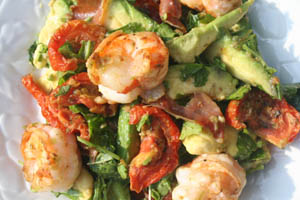

Salade van garnalen, prosciutto en rucola
Ingrediënten (voor 4 personen)
- 200 g gedroogde tomaten
- olijfolie
- 8 plakken prosciutto
- 20 rauwe middelgrote garnalen
- 2 tl balsamicoazijn
- 2 avocado's
- 60 g jonge rucola
Bereiding
- Pel de garnalen, verwijder het darmkanaal en halveer ze.
- Verwijder de pit uit de avocado's en snij ze in dunne plakken.
- Bestrijk de prosciutto licht met wat olijfolie. Verhit een koekenpan met anti-aanbaklaag op middelhoog vuur en bak de prosciutto in twee porties in 3-4 min. aan elke kant krokant.
- Laat hem uitlekken op keukenpapier en dep overtollig vet weg.
- Breek hem in stukjes.
- Verhit een grilpan en bestrijk hem licht met olie.
- Bak de garnalen in twee porties 2 min. aan elke kant.
- Bestrooi ze met zout en peper en leg ze in een grote schaal.
- Voor de dressing: meng het restant olijfolie en de balsamicoazijn.
- Doe de tomaat, prosciutto, avocado en en rucola bij de garnalen in de schaal.
- Giet er 1 el dressing bij en schep alles voorzichtig om.
- Druppel de rest van de dressing erover en serveer.